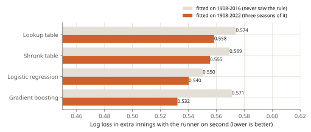

Lab note 5 of 7 · What are the odds?
Step 4: trees (gradient boosting)
The table knows every quirk but no logic; the formula knows the logic but smooths over the quirks. Gradient boosting tries to have both: it starts from nothing, and adds small decision trees one at a time, each one fixing what the trees before it got wrong.
How it works
A decision tree asks a few yes-or-no questions ("is the home team ahead by 2 or more?", "is it the 9th or later?", "are there two outs?") and gives each group of answers its own number. One small tree is a crude model. Boosting fits a first tree, looks at where it is off, fits a second tree to those errors, and so on: four hundred trees here, each allowed 31 groups and nudging the forecast only a little (a learning rate of 0.1).
Two settings keep it honest:
- Every group must hold enough data (at least 200 rows of the counts table) and the trees' numbers are shrunk a little (L2 regularisation): no group gets its own 0% from four games.
- A bigger home lead can never lower the home team's chance (a monotonic constraint on the score). The data agrees almost everywhere, but where states are rare, a tree could otherwise invent a dip.
The trees see the state as it is (inning, half, outs, each base, the score) plus one more input: whether this is an extra inning with the runner on second. They don't get the run expectancy or z: tried on 2013-2016, those inputs did not help them.
Result on the test
| Model | All | Rare states | Extra innings since 2020 |
|---|---|---|---|
| Lookup table | 0.4671 | 0.1526 | 0.5739 |
| Shrunk table | 0.4670 | 0.1393 | 0.5695 |
| Logistic regression | 0.4683 | 0.1371 | 0.5503 |
| Gradient boosting | 0.4672 | 0.1404 | 0.5711 |
Honestly: on this test, the most complex model does not beat the table. Its log loss minus the table's lies between -0.00004 and 0.00025 (95%, resampling games): no measurable difference. It does better than the table on rare states, like every smoothing model, and in the extra innings since 2020 it is only a little better than the table (0.5711 against 0.5739): its rule input was zero in every training game, so it had nothing to learn from.
Given a few seasons of the new rule
What if the trees had seen the rule? Fit everything on 1908-2022, three seasons of the runner on second, and score the extra innings of 2023 onward (626 games):

| Model | Log loss, extra innings 2023 on |
|---|---|
| Lookup table | 0.5585 |
| Shrunk table | 0.5555 |
| Logistic regression | 0.5403 |
| Gradient boosting | 0.5322 |
Now the trees are the best, 5% better than the table. The table can't learn the rule because a "runner on second, nobody out, top of the 10th" state looks the same in 1985 (after a leadoff double) and in 2023 (by rule); only the trees were given the input that tells them apart. The formula is a close second, still running on what it was told rather than what it saw.
The final model
The calculator uses gradient boosting fitted on every season, 1908 to 2025. It is as good as the table where data is plentiful, smoother where it is thin, and it has learned the extra-inning rule.
One more check for the comebacks list, which looks at odds far below 1%. Counting the long-shot side of every state, the final model's expected number of wins can be compared with what happened (on games it has seen, so this checks the shape, not the forecast):
| The long shot's chance | Plate appearances | Expected wins | Actual wins |
|---|---|---|---|
| 0.01% to 0.05% | 129,365 | 34.5 | 33 |
| 0.05% to 0.1% | 108,557 | 80.5 | 77 |
| 0.1% to 0.5% | 448,838 | 1229.4 | 1,320 |
| 0.5% to 1% | 392,605 | 2989.2 | 3,083 |
| 1% to 2% | 509,961 | 7682.0 | 8,249 |
Close where it matters for the list, and a little short between 0.1% and 2%: comebacks from there happen a few percent more often than the model says. Below 1 in 10,000 there are too few games to check.